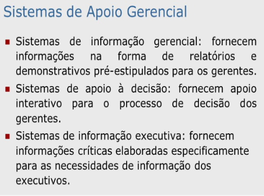

Hardware
Os hardwares são os itens físicos e tangíveis do dispositivo, desde seu gabinete até as peças que o compõe. O software, por sua vez, é o equivalente a mente do dispositivo.
Alguns componentes hardware são as descritas na imagem
Esse termo se aplica para todo tipo de equipamento tecnológico, incluindo celulares, Smart TVs, dispositivos de leitura (como o Kindle) ou Wearables (relógios inteligentes, por exemplo).
Software
Na categoria de software estão todos os programas, sistemas operacionais e aplicações que tornam possível o funcionamento da máquina.
Os softwares são responsáveis por fazer as ligações e enviar os comandos necessários para fazer com que cada hardware funcione, da mesma maneira como as sinapses ocorrem no cérebro.
Os softwares são elaborados a partir de inúmeros códigos e customizados de acordo com as tecnologias dos diferentes fabricantes de computadores.
Os sistemas operacionais são um exemplo disso. Sistemas como os famosos Windows, Linux, Android e iOS são configurados de diferentes maneiras maneiras.
Dado, Informação e Conhecimento
Na categoria de software estão todos os programas, sistemas operacionais e aplicações que tornam possível o funcionamento da máquina.
Sistema Operacional
Conceito: É o conjunto de programas que gerenciam recursos, processadores, armazenamento, dispositivos de entrada e saída e dados da máquina e seus periféricos.
O sistema que faz comunicação entre o hardware e os demais softwares. O Sistema Operacional cria uma plataforma comum a todos os programas utilizados.
Exemplos: Dos, Unix, Linux, Mac OS, OS-2, Windows NT.
Funções Básicas
Dentre as funções básicas de computadores de uso geral, pode-se citar:
- Definição da interface com o usuário;
- Compartilhamento de hardware entre usuários;
- Compartilhamento de hardware entre usuários;
- Compartilhamento de dados entre usuários;
- Gerenciamento dos dispositivos de entrada e saída;
- tratamento e recuperação de erros
Em suma, o sistema operacional, tem as funções básicas de interpretar os comandos do usuário; controlar os periféricos (teclado, vídeo, discos, impressora, mouse, plotter, etc) e organizar arquivos em disco.
O sistema operacional "se comunica" com:
- Usuários: pessoas que utilizam o computador como uma ferramenta dentro da sua área de atuação;
- Hardware, equipamentos conectados, memória;
- Programas, softwares aplicativos, utilitários e compiladores;
- Operadores de computador, responsáveis pela monitoração do sistema operacional,
normalmente em máquinas de grande porte, como funções de controle de discos, fitas, impressora, etc.;
- programadores de aplicação, profissionais que desenvolvem software aplicativo para
um determinado tipo de máquina e determinado sistema operacional;
- Programadores de sistema; responsáveis pela manutenção do sistema operacional;
- Administrador do sistema, responsável pelo controle da utilização da máquina,
seus recursos e softwares, cadastramento de usuários, oferecer ou retirar direitos
a determinadas operações, a utilização de recursos (ex. impresssora), etc.
Computador Multinivel
Basicamente uma maquina que suporte vários níveis de programação e interação com o hardware, e sendo que um programador de cada nível não precisa conhecer os niveis inferiores Tipo um PC, no nível mais baixo você tem o hardware propriamente dito, com os circuitos eletrônicos do CPU e memoria, acima deste você tem o nível de microcódigo, as CPUs atuais suportam instruções x86, mas essas instruções são quebradas em micro instruções por um decodificador dentro do CPU, essas microinstrumentos são diretamente executadas pelas unidades de execução dentro do processador, e finalmente o conjunto de micro instruções é especifico pra uma família de chips, tipo os i5 skylake tem micro instruções diferente dos i5 kabylake....
Acima deste nível tem a linguagem de maquina x86, e acima deste o assembly, logo acima do nivel do assembly esta o sistema operacional e suas APIs, e logo depois as linguagens de programação de alto nível compiladas, e depois as linguagens de alto nível interpretadas, e depois o JAVA e suas crias.
A cada nível você tem do ponto de vista do usuário/programador uma "abstração" com se fosse uma maquina virtual totalmente independente, tipo o programador java não precisa sequer saber qual sistema operacional vai T̶r̶a̶v̶a̶r̶ ao rodar seu programa, enquanto o programador C já tem que se preocupar com o sistema operacional, particularidades do compilador, quantidade de memoria, o programador assembly ja tem que ter um conhecimento básico de arquiteturas de processadores, endereçamento de memoria, o engenheiro que escreve o microcódigo geralmente é o mesmo que projetou o processador ou no minimo um engenheiro desenvolvedor de firmware UEFI. quanto mais você "desce o nível" mais complicado e mais especifico fica o código do programa escrito.
O que é arquitetura RISC e CISC e suas diferenças
Máquinas CISC (Complex Instruction Set Computer) têm um conjunto de instruções grande, de tamanhos variáveis, com formatos complexos.
Muitas dessas instruções são bastante complicadas, executando múltiplas operações quando uma única instrução é dada (por exemplo, é possível realizar um loop complexo usando apenas uma operação assembly).
O problema básico com máquinas CISC é que um conjunto pequeno de instruções complexas torna o sistema consideravelmente mais lento.
Máquinas que utilizam a filosofia chamadas de RISC
A arquitetura RISC (Reduced Instruction Set Computer), como o próprio nome já diz, tem como principal objetivo simplificar as instruções de modo que elas possam ser executadas mais rapidamente.
Cada instrução executa apenas uma operação, que são todas do mesmo tamanho, tem poucos formatos, e todas as operações aritméticas devem ser executadas entre registradores (dados da memória não podem ser utilizados como operandos). Praticamente todos os conjuntos de instruções (para qualquer arquitetura) lançados desde 1982 têm sido RISC, ou alguma combinação entre RISC e CISC.
Sistema Operacional
É um software ou conjunto de softwares cuja função é administrar e gerenciar os recursos de um sistema, desde componentes de hardware e sistemas de arquivos a programas de terceiros, estabelecendo a interface entre o computador e o usuário.
Entenda como um “computador” ou qualquer máquina de processamento automático de dados, como um desktop ou notebook, um celular ou tablet, um smartwatch, um servidor, um console de videogame, um set-top box, um roteador ou outro aparelho.
O sistema operacional introduz uma “camada de abstração” entre o hardware e o usuário, que transforma comandos no mouse ou teclado e solicitações do sistema, como gerenciamento de recursos (CPU, memória RAM), em linguagem de máquina, enviando instruções ao processador.set-top box, um roteador ou outro aparelho.
Este último os traduz para código binário, executa os comandos e envia as respostas como informações que aparecem na sua tela.
Oque é SIG – Sistemas de Apoio Gerencial
Memória Do Computador
Quando falamos de memória do computador, muita gente pode se confundir com os tipos existentes na máquina, até porque os termos utilizados são os mesmos.
A capacidade do disco rígido (HD) pode ser medida como memória "meu micro tem 80 GB de memória" assim como existe a memória RAM.
As memórias são as responsáveis pelo armazenamento de dados e instruções em forma de sinais digitais em computadores. Para que o processador possa executar suas tarefas, ele busca na memória todas as informações necessárias ao processamento. Existem 2 tipos de memória, ROM e RAM, cujas características serão mostradas a seguir.
Memória RAM
RAM é a sigla para Random Access Memory (memória de acesso aleatório).
Este tipo possibilita a leitura, gravação e regravação de dados.
Quando desligamos o computador, porém, este tipo de memória perde todos os dados. A memória RAM se divide entre DRAM (Dynamic Random Access Memory) e SRAM (Static Random Access Memory). A DRAM é a memória dinâmica e em geral possui alta capacidade de armazenamento de dados, apesar de ser mais lenta em comparação às do tipo SRAM, que são estáticas, mais rápidas e com preço por MB mais alto. Os computadores pessoais têm a memória RAM em forma de pentes, que contém pequenos circuitos com diferentes capacidades. Para utilização com Windows XP, o mínimo recomendado para memória RAM varia entre 256 e 512 MB.
Memória ROM
Rom= Read Only Memory (memória somente de leitura), de modo que as informações são gravadas uma única vez pelo fabricante e não podem mais ser apagadas ou alteradas, apenas acessadas.
Entre as memórias ROM temos as PROM (Programmable Read Only Memory), EPROM (Erasable Programmable Read Only Memory), EAROM (Electrically Alterable Read Only Memory) e memórias flash. Embora as memórias RAM e ROM sejam freqüentemente comparadas como tipos opostos, na verdade ambas são memórias de acesso aleatório.
O que é RAID
RAID é uma sigla em inglês para Redundant Array of Inexpensive Disks. Em tradução direta, o termo quer dizer algo como Matriz Redundante de Discos Independentes. Ficou ainda mais perdido?
Traduzindo essa informação: trata-se da combinação de vários discos rígidos, os populares HDs, de maneira que eles formem uma única unidade lógica.
Dessa forma, os mesmos dados que são armazenados em um disco estão disponíveis em outro. Em outras palavras, quando vários HDs funcionam como se fossem um só, temos uma RAID. E por que isso é útil? Em caso de falhas em um disco, os demais vão continuar em funcionamento, evitando que as informações se percam ou que haja interrupção no acesso aos dados. Assim, podemos dizer que o RAID proporciona mais segurança e mais desempenho. Ele pode funcionar como um mecanismo de redundância, por exemplo.
Backup
Backup é uma cópia de segurança dos seus dados de um dispositivo de armazenamento (celulares, tablets, computadores) ou sistema (aplicativos, softwares e jogos) para outro ambiente para que eles possam ser restaurados se você perdeu as informações originais, trocou de aparelho, entre outros casos.
Dito isso, você já deve imaginar que precisamos copiar essas informações para algum lugar seguro.
E para isso, portanto, é necessário decidir se salvará os dados em uma mídia física ou nuvem, se vai usar algum software.
Fluxograma do Aplicativo

Solução Técnica Para o Software
O software contará com um cadastro inicial que será escrito em HTML/CSS e PHP, e armazenado essas informações em um banco de dados.
Este banco de dados será armazenado em nuvem, no Google Drive inicialmente, dentro de um servidor em nuvem da Amazon AWS, que terá um custo mensal estimado de U$21,00.
O custo central irá girar em torno desse valor, neste semestre, pois, todo o resto do código será desenvolvido pelos participantes do PI.
Estrutura Tecnológica e Recursos Humanos
Como dito anteriormente, todo o código será desenvolvido pelos 5 participantes do PI, que se dividirão em desenvolvimento Front-End e Back-end, podendo alternar entre os colaboradores dependendo da demanda.
Boa parte dos recursos necessários em Back-end, ainda não aprendemos neste semestre, porém, iremos nos especializar no aprendizado deste, para realização do projeto. Contando com toda a parte de estudo e desenvolvimento do projeto em Si, creio que seja necessário pelo menos 200h para realização do mesmo.
A estrutura tecnológica será desenvolvida pelo desktop individual dos participantes do projeto, não sendo necessário o uso dos computadores da universidade.
Também será necessário como dito anteriormente, o uso de um servidor em nuvem, que no caso será usado o amazon AWS, com base em um serviço EC2 com 2 GB de memória RAM, localizado nos EUA, onde será mais barato o custo mensal do mesmo.
Os requisitos mínimos para rodar a versão web deste projeto é Windows 7 ou posteriores e um processador Pentium 4 e posteriores.
Já para Linux e Mac os Sistemas Operacionais mínimos são Ubuntu 18.04 de 64 Bits e macOS High Sierra 10.13, respectivamente.